Okinawa and Okinawans

(Formerly:10A/POA-158-45-958) Okinawa. Aerial view of Kadena Circle.
(Signal Corps Photo). Mokis, Photo Det 28, 3117 Sig SV BN

Okinawa. A bailey bridge is constructed over a river on highway 6N,
parallel to a Jap bridge, to accommodate heavy two way trafic at this point.
(Signal corps Photo). Pierce, 3234 Sig. Photo Det.
Many captions mention the slur “Jap” as these were U.S. military photographs.
It is important to point out while Japanese distance themselves from Okinawans,
to outsiders like the U.S. they were seen as the same people.

Okinawa. Showing two bridges on river near Machinato. Four weasel have been
knocked out and abandoned due to heavy enemy mortar fire. (Signal Corps Photo).
Barabas, 3240 Sig Serv Det)

Okinawa. An aerial view of Naha, Okinawa's chief city, taken from a cub
plane which is used by the artillery for direction fire and observation. (Signal
Corps Photo). Rosenthal, 3235 Sig Photo Det.

Great White Father', 'Boss' Thomas and crew of small Okinawa Gooks. Taken
on site of demolished Oki residence 25 Apr 45. With a smattering of the Jap
language & a quantity of pantomime I got a lot of work out of these 'kids'.
They are very meticulous, friendly, & apparently tireless. (This WDA [?]
pose is not normal!)

Okinawa. A group of Okinawan Native girls climb into an army truck which
will take them to the 7th Inf Div Area, where they will work in the QM laundry.
(Signal Corps Photo). Pinsky, 3223 Sig Photo Det

Okinawa. Many ancient customs are in evidence on Okinawa. These Native
women return to their homes carrying their clothing atop their heads in
primitive fashion near the town of Shimobaru. (Signal Corps Photo). Shipherd,
3236 Sig. Photo Det.
In the caption of this photo we can see the difference in the soldiers'
perspective of native Okinawans and that of the Social Scientist. While Social
Scientists saw the Okinawans as a sophisticated people, Army soldiers referred
to them and aspects of their lives as “primitive”.

Okinawa. A Japanese soldier and woman walk along coral flat along beach on
way to collection point. (Signal Corps Photo). Hendrickson, Sig Photo Det 27,
3925 Sig Photo SV CO

Okinawa. Children in a class room at Takasu School which is under the
supervision of AMG Officers. (Signal Corps Photo). McGill, 3241 Sig Photo
Det

Okinawa. Many Okinawan Natives are evacuated from caves and shelters where
they were hiding during the battle across Okinawa all Jap soldiers who refused
to surrender were killed and the Natives were taken to places of safety by the
106 and 105 Regts of the 27th Inf Div (U.S. Army Photo). Gurtcheff, 1st Info
& Hist Serv

Zamami Shima, Kerama Rhetto, Ryukyus. First native civilians (Okinawa)
return to Zamami town after American occupation. Civilians were herded into
municipal building as they returned from their hillside caves, and kept there
until the following day when military government officials came ashore to take
charge of the situation. U.S. Army Photo by Faircloth, 1st Information &
Historical Service

Okinawa. Male civilians of soldier age who surrendered to the 105th Regt,
27th Ine. Div. line up for identification tags. (Signal Corps Photo). Belgin,
3240 Sig. Photo Det.

Okinawa. A Japanese 1st Lt., who was with a machine gun company, is married
to his sweetheart, a 19 year old Okinawan who served as a volunteer nurse with
the Japs. The Lieutenant surrendered to save the life of the girl, and the
marriage ceremony was performed by an army chaplain. To the rear of the bride
stands the bridesmaid, an English speaking Hawaiian who has a brother fighting
in Italy with the Hawaiian troops. (Signal Corps Photo). Photographer
Unknown

Okinawa. T/3 Nobuo D. Kischiue, of Hanford, Calif., A Nesei interpreter of
the 27th Inf. Div. interrogates Okinawan evacuees from Shure, in a village north
of Nago, in an effort to obtain information about the defense set up in Shure,
the heart of the Jap defense system in the bitterly contested lower half of
Okinawa. (signal Corps Photo). Miller, 3240 Sig. Photo Det.
![Okinawa. Japanese women and girls return from the fields with their
baskets, laden with sweet potates [sic], atop their heads and cross a brook](images/0116-00087.jpg)
Okinawa. Japanese women and girls return from the fields with their
baskets, laden with sweet potates [sic], atop their heads and cross a brook;
(they didn't drop a potatoe.) (Signal Corps Photo). Adams, 3234 Sig. Photo
Det.

Okinawa. Native women harvest potatoes on Okinawa with the aid of crude
hoes. The baskets full of potatoes in the foreground testify to the success of
their crop. (Signal Corps Photo). Adams, 3234 Sig Photo Det.

Okinawa. Higa, Kamado, age 63, Okinawan snake catcher from Nakao displaying
the deadly snake Habu found in Okinawa. In catching a snake he uses a hollow
piece of bamboo with a heavy piece of wire with a curve on the end which runs
through the center of bamboo. He has been catching these snakes for 20 yrs and
was paid 20 yen for each snake by the Jap govt. The Habu snake is sometimes as
long as 7ft. S Sgt Mokis, Photo Asgmt Det 28 (Signal Corps Photo).

Okinawa. Higa, Kamado, age 63, Okinawan snake catcher from Nakao,
demonstrating to Mil Govt personnel how to handle a Habu to open up its jaw.
Sgt Mokis, Photo Asgmt Det 28 (Signal Corps Photo)

Okinawa. Maj Harold E Keller, Topeka, Kansas, addresses the assembly at the
opening of the Koza school system. (Signal Corps Photo). McGill, 3241 Sig Photo
Det

Okinawa. Students studying school lessons. (Signal Corps Photo). McGill,
3241 Sig Photo Det)

Okinawa. School children playing tug of war during physical training period
at Takesu. (Signal Corps Photo). McGill, 3241 Sig Photo Det
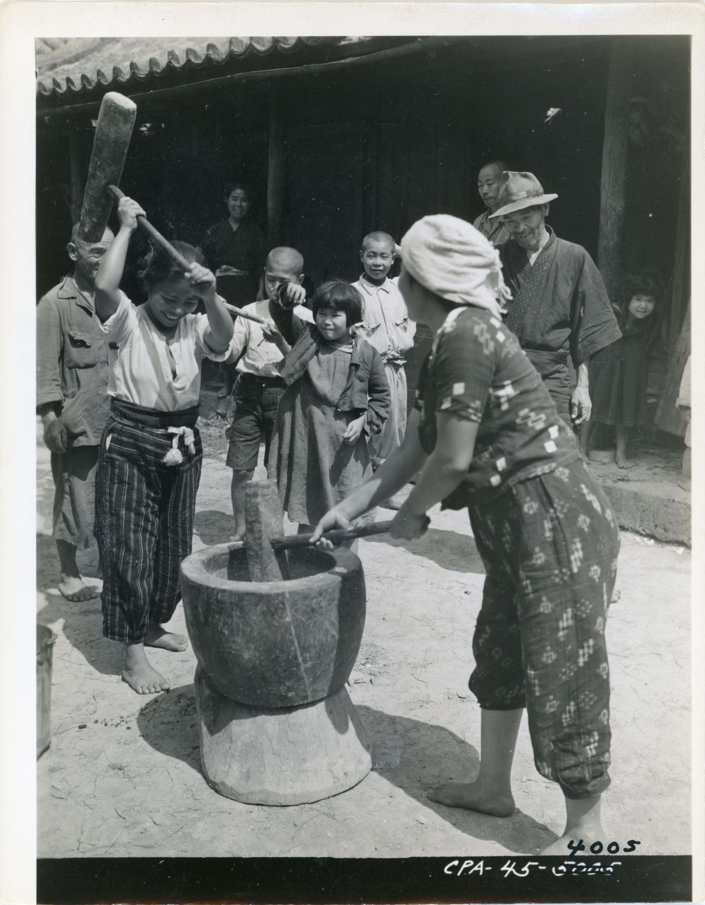
Okinawa. Two Okinawan women in the town of Shimabaku, war having passed
beyond them, pound rice in front of their homes while the rest of the family
watches. (signal Corps Photo). Fusco, 3231 Sig. Serv. Det.
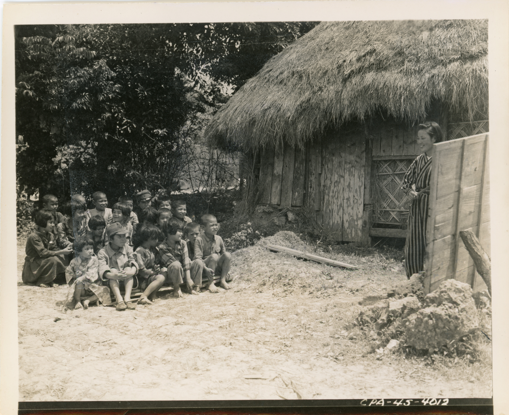
Okinawa. Miss Cheeko Shingari, a Native schoolteacher, is conducting a
class out of doors. The school is located in the town of Shimbaku, and is
supervised by our military authorities. (Signal Corps Photo). Fusco, 3231 Sig
Serv Det
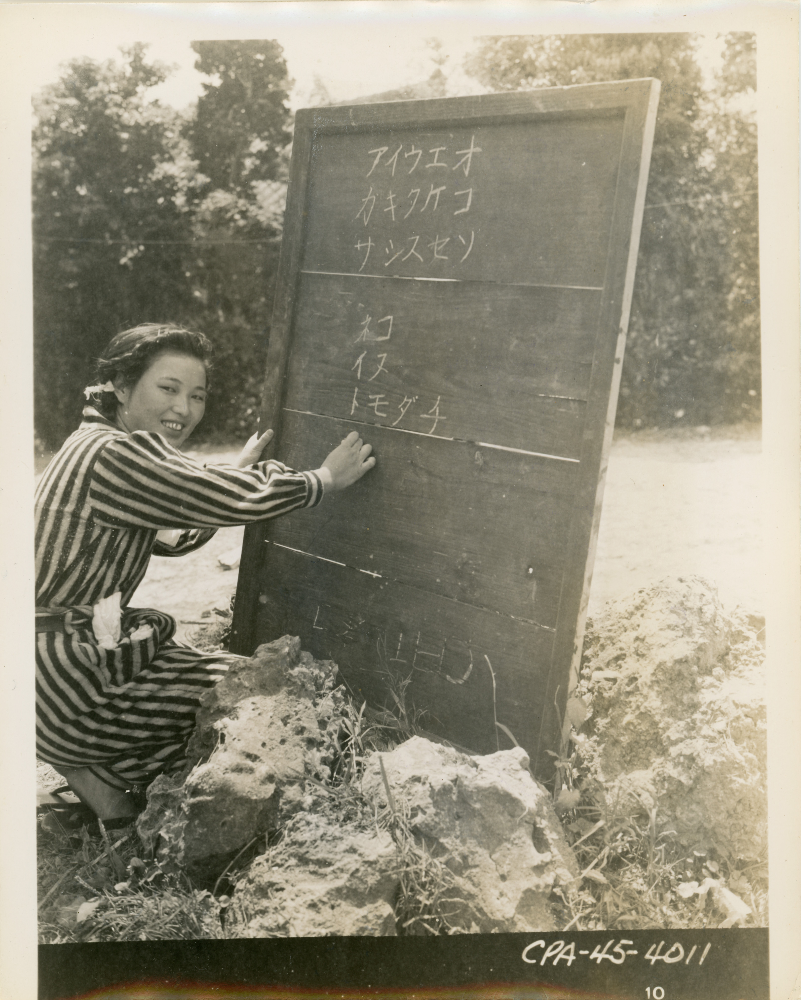
Okinawa. Miss Cheeko Shingari, a Native schoolteacher, is shown at her
blackboard. Classes are held out of doors, and are being conducted under the
supervision of military authorities. (Signal Corps Photo). Fusco, 3231 Sig SV
Det
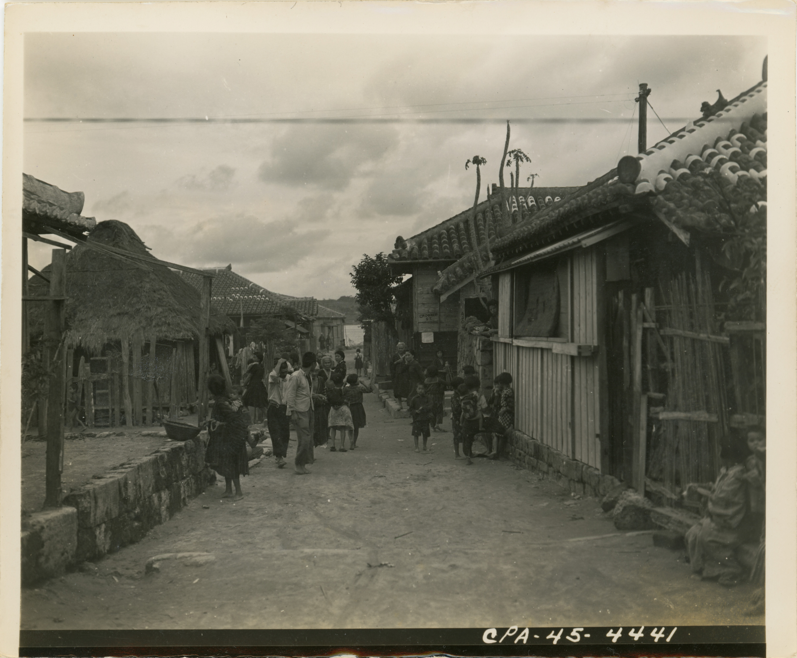
Okinawa. A typical street scene in the town of Shimobaru, with the
civilians pursuing their routine activities. (Signal Corps Photo). Shipherd,
3236 Sig Photo Det
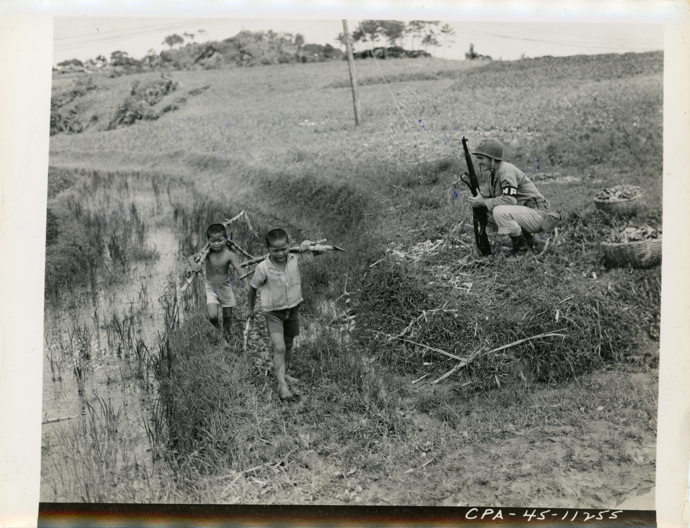
Okinawa. 10th Army MP guards Okinawan children working in the fields.
(Signal Corps Photo). Pierce, 3234 Sig. Photo Det.
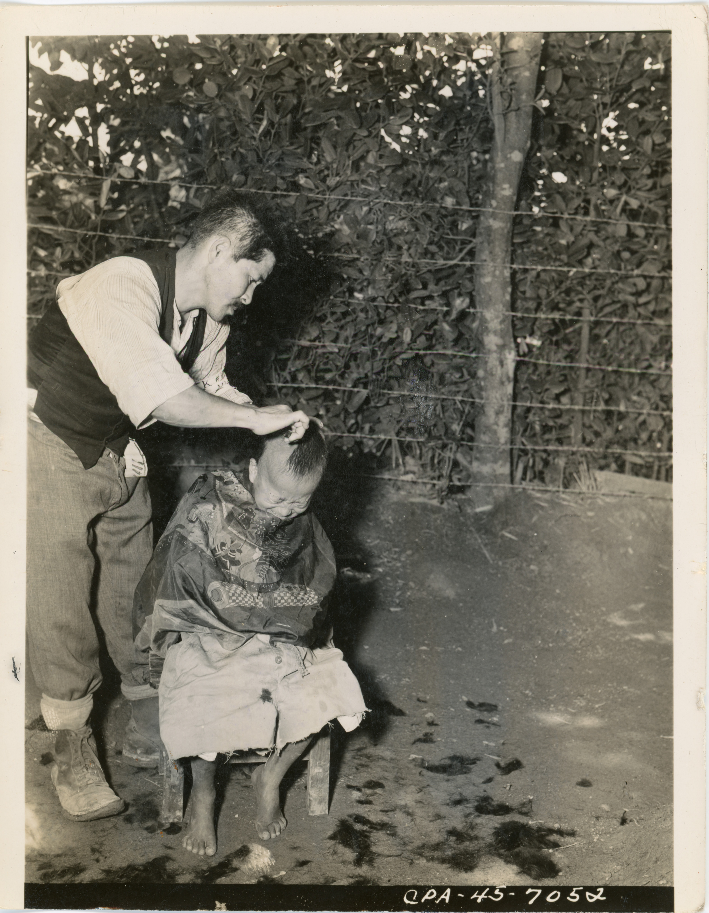
Okinawa. Many of the adult male civilians of soldier age who surrendered to
the 105th Regt, 27th Inf. Div., are appointed to various duties. This former
barber, at a military government orphanage, applies his tonsorial skill to one
of the orphans. (Signal Corps Photo). Belgin, 3240 Sig. Photo Det.
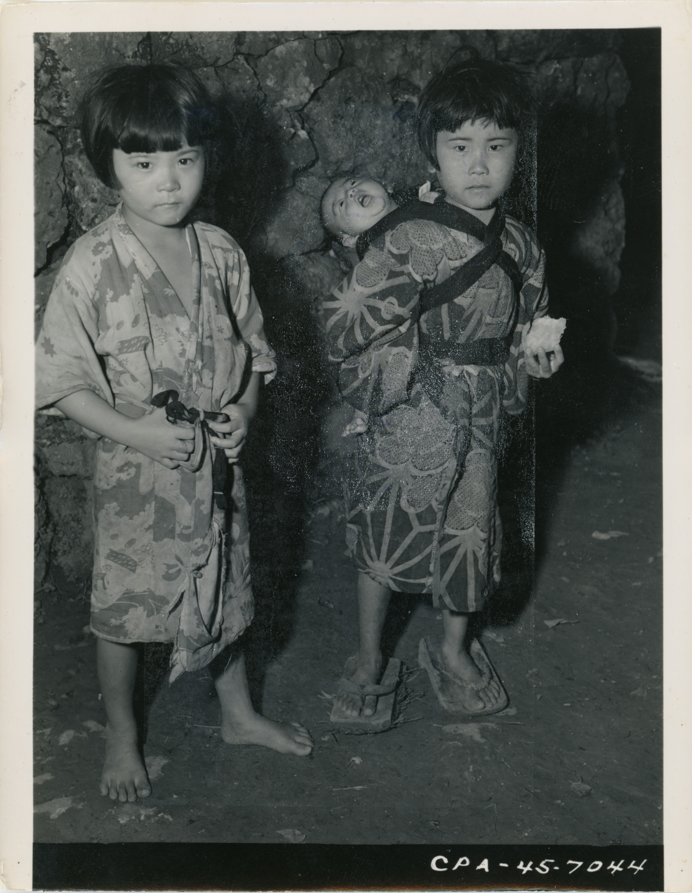
Okinawa. Many customs of the far East are in evidence on Okinawa. A seven
year old girl is shown carrying a two month old baby on her back in ancient
fashion in the village of Nodake. (signal Corps Photo). Adams, 3234 Sig. Photo
Det.
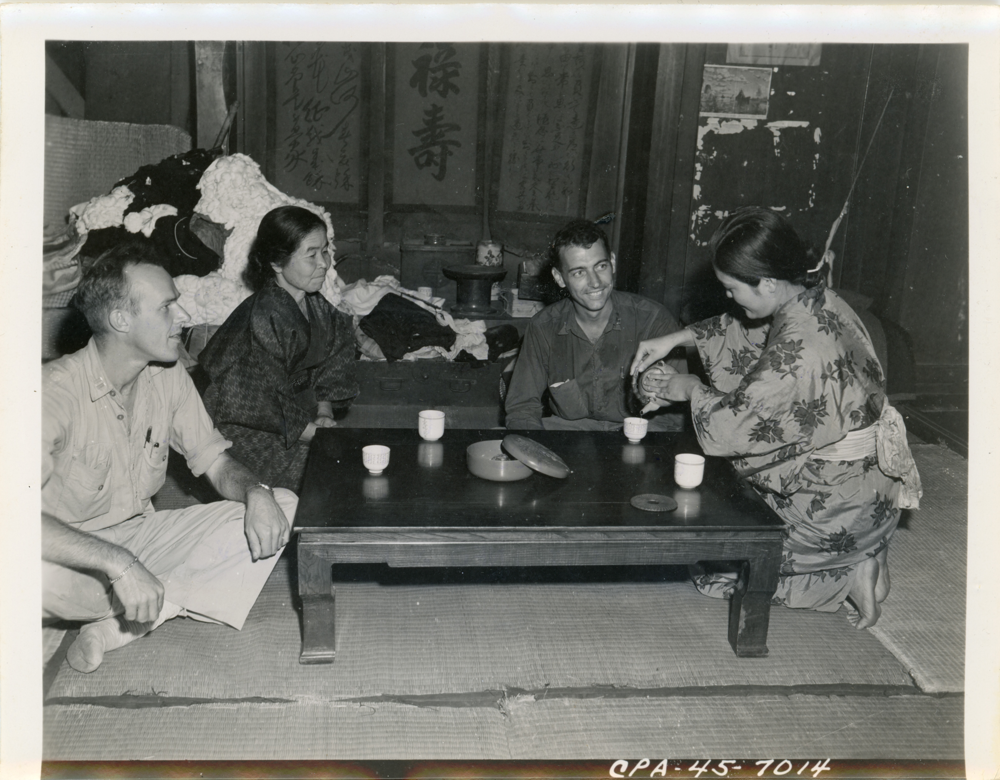
Okinawa. Native women are honored by having Americans in to tea. L-R: Capt.
L. T. Tolman and Capt. Chancey M. Depuy, with their shoes off, make themselves
at home. (Signal Corps Photo). Adams, 3234 Sig. Photo Det.
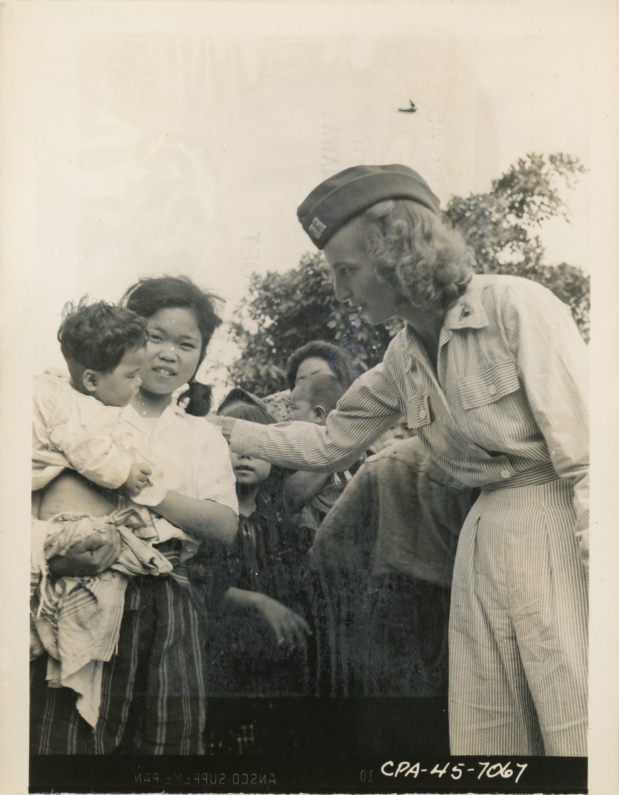
Okinawa. Capt Jeanette Butler, Waterloo, N.Y., Senior Nurse at the 69th
Field Hospital, talks to Native mother and child. (Signal Corps Photo). Pinsky,
3223 Sig Photo Det
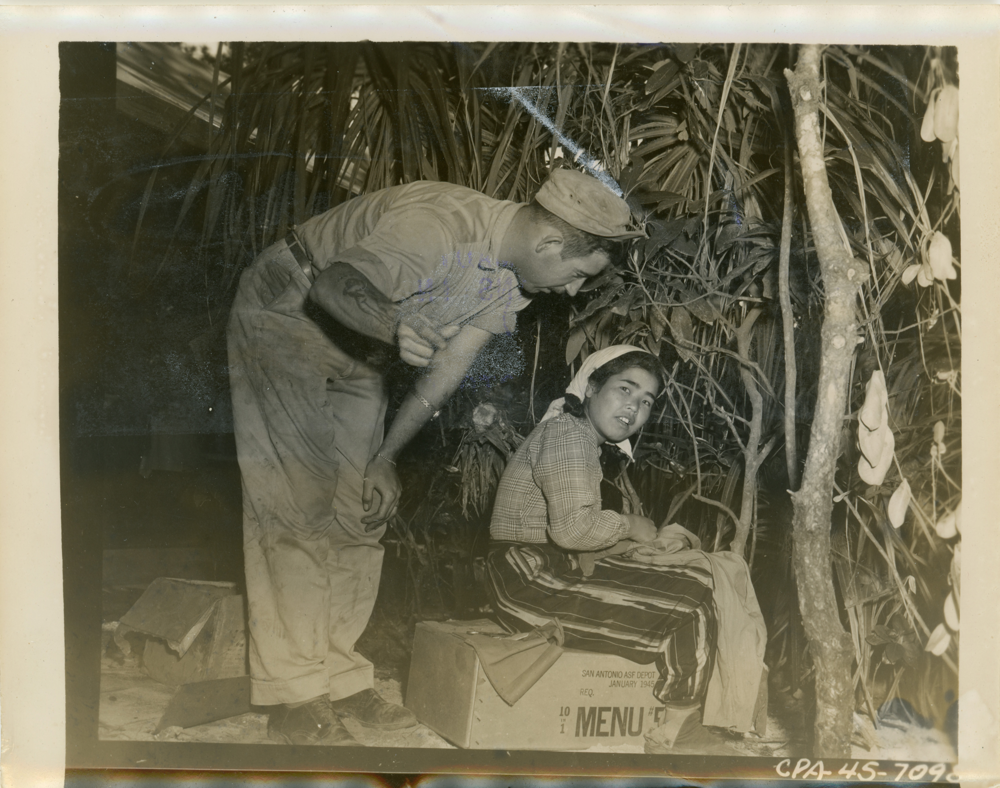
Okinawa. PVT Paul Peevy, Gainsville, GA., talks to Tomeko, a young Native
girl who works in the BN Officers' Mess. (Signal corps Photo). Barabas, 3240
Sig
Photo Det
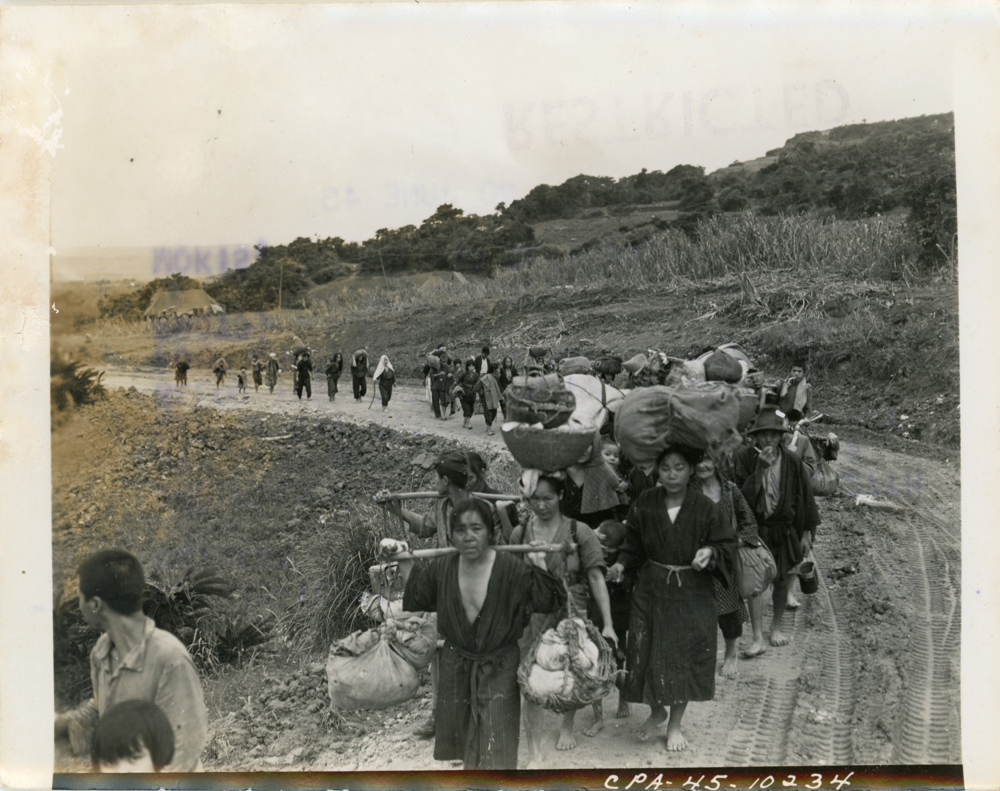
Okinawa. Okinawan civilians trudge along a road to the area designated by
the Military government. Many carry their possessions in the traditional manner
atop their heads. (signal Corps Photo). Photog. Unknown, 3233 Sig. Photo
Det.

Okinawa. This Geisha girl is doing a dance done for travelers going from
Okinawa to the Mainland of Japan at a festival, Taira, Okinawa. Geisha girls
entertained service personnel and navtives [sic] at the fete. They were formerly
inmates of Geisha houses on the island. (Signal Corps Photo). Photog.
Unknown.
It was noted that performance arts were very important to the Okinawa people
and cities like Naha had opera houses to house these performances.

Taira, Okinawa. Troops and Natives watch dance being performed by Geisha
girls who formerly worked in the Okinawa Geisha Houses. (Signal Corps Photo).
Munn Detphoto Det 28, 3925 Sig Photo SV Co

Taira, Okinawa. Two Geisha girls, who formerly worked in the Okinawa Geisha
Houses, perform a typical dance for American troops. (Signal Corps Photo). Munn,
Photo Det 28, 3925 Sig Photo SV CO

Okinawa. Geisha girls shown doing the sword dance of soldiers during the
dance festival held for American troops stationed at Taira, Okinawa. (Signal
Corps Photo). Munn, Photo Det 28, 3925 Sig Photo SV CO

Okinawa. Geisha girls make up backstage for their dances in the traditional
fashion at Taira, Okinawa. A native dance festival was held, attended by the
U.S. tenth Army, Marine and Navy personnel. The dances originated in the ancient
days when the island was ruled by a king, and interpreted by the girls who
formerly entertained at Geisha Houses. (Signal Corps Photo). Photog.
Unknown.

Okinawa. Geisha girls at Taira, Okinawa entertain service and native
audience with a dance portraying some moments in the life os a fisherman and
his
wife. The The [sic] festival was devoted to the native dances of Okinawa as
interpreted by the girls, former inmates of Geisha Houses on the island. (Signal
Corps Photo). Phog. Unknown.

Okinawa. Geisha girls, performing for American troops stationed at Taira,
Okinawa, do the Dance to Girl and Lover during the dance festival held at Taira.
(Signal Corps Photo). Munn, Photo Det 28, 3925 Sig Photo SV CO

Okinawa. Geisha girls in the finale "Chorus Line" during the dance festival
held for American troops stationed at Taira, Okinawa. (Signal Corps Photo).
Munn, Photo Det 28, 3925 Sig Photo SV CO

Okinawa. These Geisha girls are interpreting a dance done for travelers
going from Okinawa to the mainland of Japan at a festival. The girls, former
inmates of Geisha houses on the island, entertained the service and native
audience with their dances. (Signal Corps Photo). Photog. Unknown.

Native Okinawans packing food and supplies to men of the 165th Inf Regt,
27th Div, fighting on Kushi Take Mountain. (Signal Corps Photo). Munn, Photo
Det
28, 3117 Sig SV BN